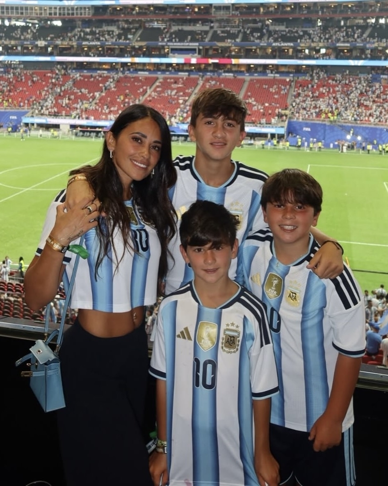

Путь через континенты
Факт 1: Росарио (1987-2000)
Первые 13 лет жизни Месси провёл в аргентинском городе Росарио. Он жил в районе Бахо-Сентро в скромном доме. Именно здесь он начал играть в футбол на улицах и в местных клубах. Семья Месси была очень близка, и Лео до сих пор поддерживает тесные связи с родственниками в Росарио.
Факт 2: Барселона (2000-2021)
21 год Месси прожил в Барселоне! Сначала семья жила в съёмных квартирах, затем купила дом в пригороде. Позже Месси приобрёл роскошную виллу в Кастельдефельсе (пригород Барселоны) стоимостью около $4 млн. Здесь он вырастил троих сыновей: Тьяго, Матео и Чиро.
Факт 3: Париж (2021-2023)
После ухода из "Барселоны" Месси переехал в Париж, где выступал за ПСЖ. Семья арендовала особняк в престижном районе Нёйи-сюр-Сен. Однако Месси так и не смог полностью адаптироваться во Франции и постоянно скучал по Барселоне.
Факт 4: Майами (2023-настоящее время)
С июля 2023 года Месси живёт в Майами, США, где играет за "Интер Майами". Семья купила особняк на искусственном острове Star Island стоимостью около $10.75 млн. Месси признался, что выбрал Майами, чтобы его дети могли свободно гулять по улице, чего не было возможно в Барселоне.